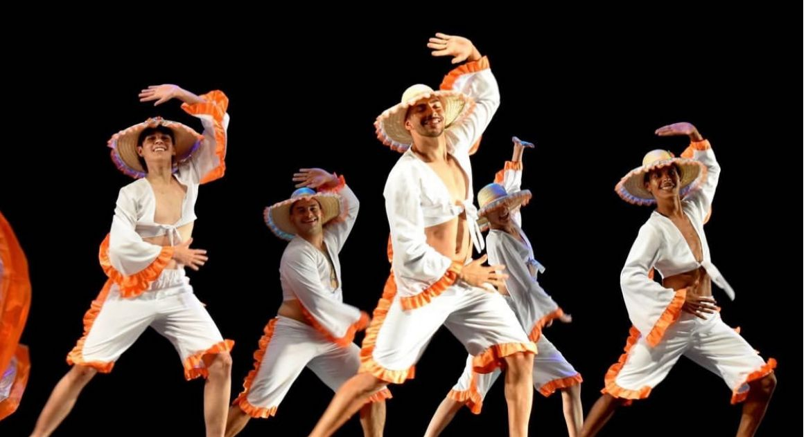

Carimbó
O Carimbó é uma manifestação cultural tradicional da região norte do Brasil, especialmente do Pará, teve origem durante o século XVII. De origem indígena, com influências africanas e portuguesas, é caracterizado por música animada, dança envolvente e vestimentas coloridas. Os instrumentos principais são o curimbó (tambor de madeira e couro), maracas e flautas. A dança é marcada por movimentos soltos e rodopios, com os dançarinos descalços. O Carimbó foi reconhecido como Patrimônio Cultural Imaterial do Brasil em 2014.